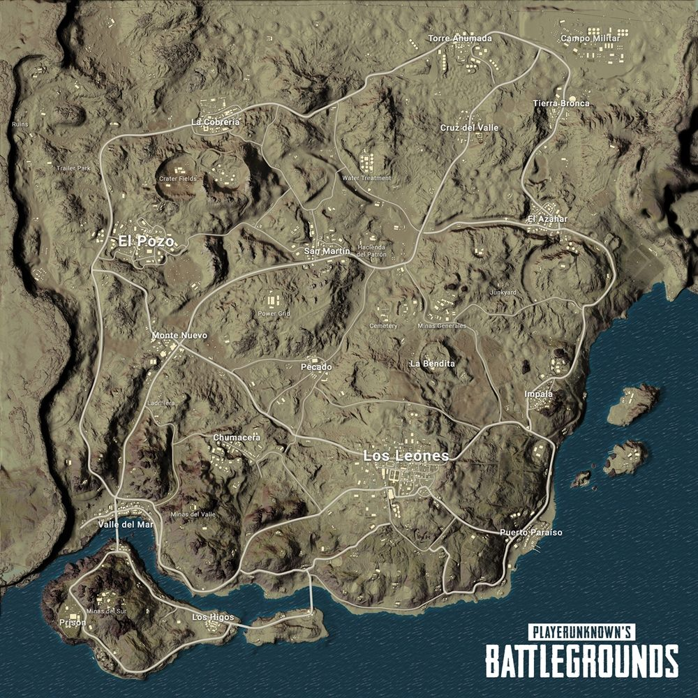

Introduction of VizBG

PlayerUnknown Battlegrounds (PUBG) has been an extremely popular game globally
since last year. We are two of the millions of fans of the game and we decided
to make some cool visualization based on the data of the game.
The game is an online multi-player battle royal game, where 100 random players are
dispersed from a plane to an isolated island to fight and kill. From the first moment
of players’ landing, they move around in this space to pick up weapons and supplies so that
when they meet other players they are in a better shape to fight. As time goes by in the game,
the arena shrinks which forces the players to enter a smaller space and fight.
Intuitively, the last player stays alive is the winner.
Below is a map from the game to give you some sense of the rules.
The circle is where players are allowed to move without causing any damage.
And the right hand side is the view from any player

Strategy about choosing location is very important in this game.
The biggest motivation of this project is to learn from the player behavior and
understand the strategy players adopt.
We are glad to find the data we need from kaggle.
This public kaggle dataset contains information about 720,000 competitive matches
extracted from pubg.op.gg, a game tracker website
Please feel free to explore the visualization tabs to interact with the data!